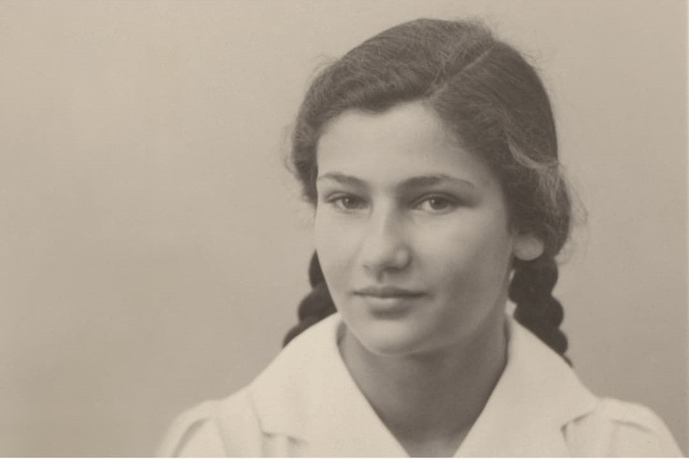
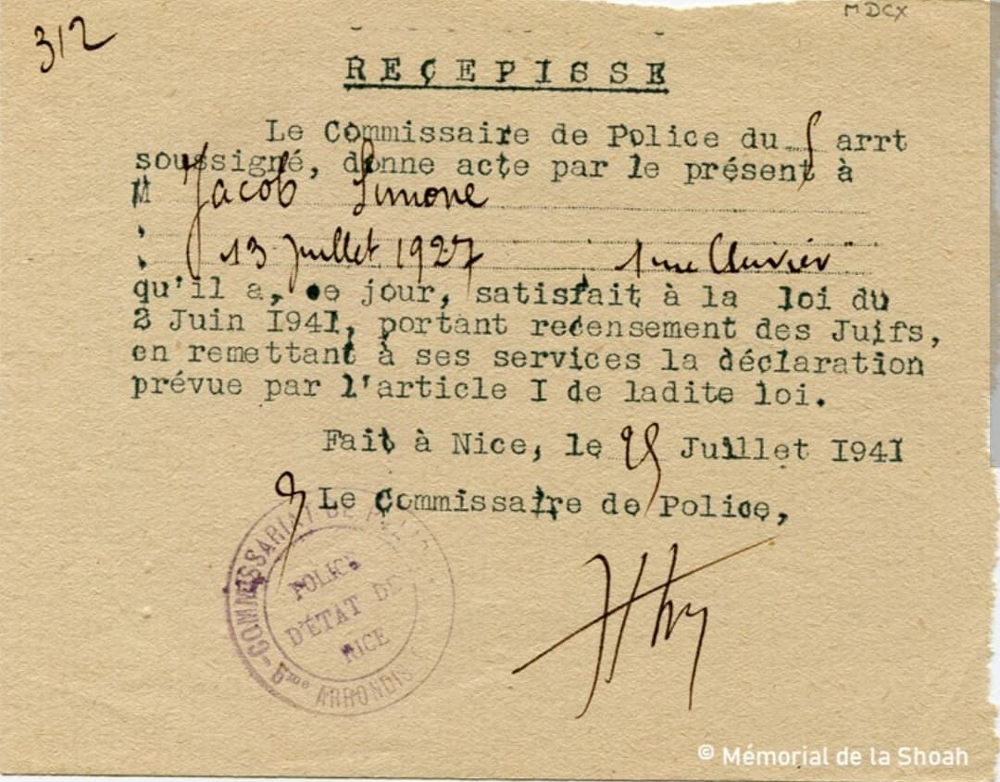
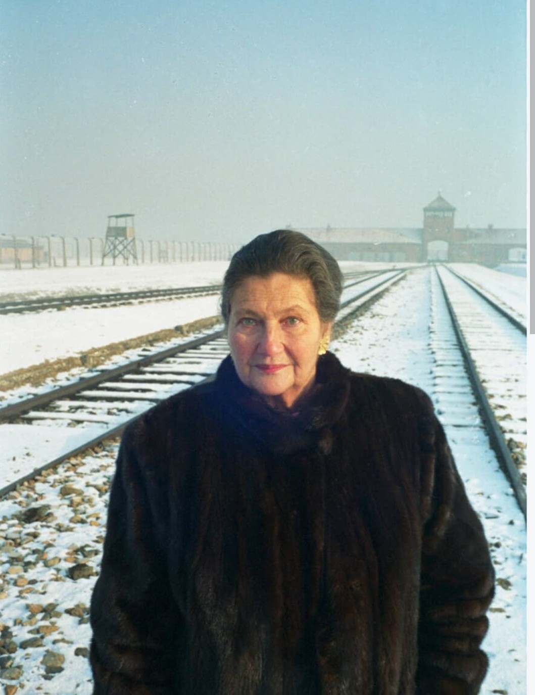
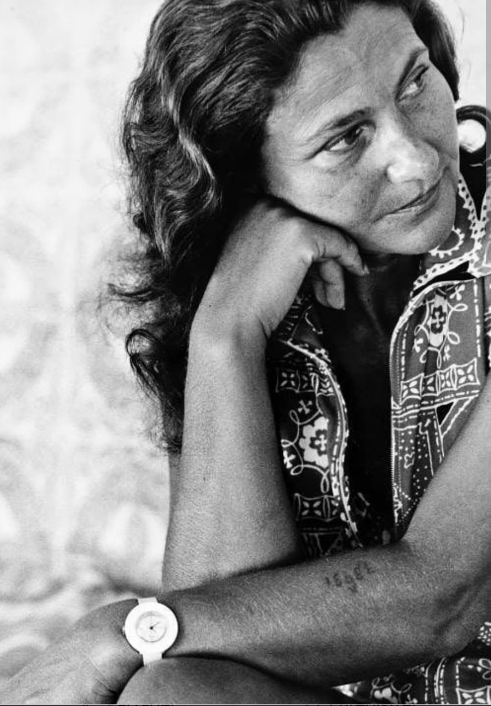
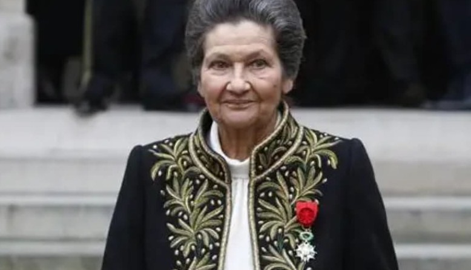

Simone Veil, née Simone Jacob le 13 juillet 1927 à Nice, est une survivante de la Shoah et l’une des plus grandes figures morales et politiques de la France contemporaine. Déportée à Auschwitz-Birkenau à 16 ans, elle survit aux camps nazis, puis consacre sa vie à la justice, aux droits humains et à la mémoire des déportés.
Son parcours incarne à la fois la tragédie de la Seconde Guerre mondiale et la capacité de reconstruire, de défendre la dignité humaine et de porter une parole forte contre l’oubli.
Issue d’une famille juive française, Simone Jacob grandit à Nice. Avec l’arrivée du régime de Vichy et l’occupation, les Juifs sont soumis à des lois antisémites : recensement, exclusion, spoliation, puis déportation.
En 1941, elle est officiellement recensée comme juive par les autorités françaises collaborant avec l’occupant nazi. Ce recensement est une étape vers la persécution et la déportation.

Le document présenté est un récépissé officiel délivré par le Commissariat de Police de Nice en juillet 1941. Il atteste que Mlle Simone Jacob a été enregistrée conformément à la loi du 2 juin 1941 portant recensement des Juifs.
Ce papier administratif, portant tampon et signature, montre la dimension bureaucratique de la persécution : avant les arrestations et les déportations, il y a des formulaires, des listes, des fichiers. Ce document est une trace directe de la mise à l’écart progressive des Juifs dans la France de Vichy.
Le 30 mars 1944, Simone Jacob est arrêtée à Nice avec sa mère et sa sœur lors d’une rafle visant les familles juives. Elle est déportée vers le camp d’extermination de Auschwitz-Birkenau.
À son arrivée, elle reçoit un numéro de déportée, tatoué sur son avant-bras : un marquage destiné à déshumaniser les prisonniers et à les réduire à une simple identité administrative dans le système concentrationnaire nazi.

À Auschwitz puis dans d’autres camps, Simone Veil subit le travail forcé, la faim, le froid, les maladies et les sélections. Les prisonniers vivent dans la peur permanente d’être envoyés à la mort.
Sa mère meurt du typhus dans le camp. Malgré les pertes, la violence et la déshumanisation, Simone Veil survit grâce à sa jeunesse, sa résistance physique et la solidarité entre déportées.
En janvier 1945, lors de l’évacuation d’Auschwitz, elle est contrainte de participer à une marche de la mort vers l’Allemagne. Elle survit à ces derniers mois du régime nazi et est finalement libérée au printemps 1945.

La photographie montre le tatouage de déportée de Simone Veil : une série de chiffres inscrits sur son avant-bras. Ce numéro, attribué à son arrivée à Auschwitz, est le symbole de la volonté des nazis de réduire les personnes à des numéros, effaçant leur identité, leur histoire, leur nom.
Pour Simone Veil, ce tatouage restera toute sa vie une trace physique de la déportation, mais aussi un témoignage silencieux de ce qu’elle a vécu. Il rappelle que derrière chaque numéro se trouve une personne, une famille, une histoire.

De retour en France après la libération, Simone Veil doit faire face à la reconstruction personnelle : retrouver une vie après les camps, porter le deuil des proches disparus, vivre avec le souvenir de la Shoah.
Elle choisit de s’engager dans le droit et devient magistrate. Très vite, elle se consacre à la protection des plus vulnérables, à la défense des droits humains et à la lutte contre les injustices.
Plus tard, elle jouera un rôle majeur dans la vie politique française et européenne, notamment en portant la loi sur l’interruption volontaire de grossesse (IVG) en 1975 et en devenant la première présidente du Parlement européen élu au suffrage universel. Ces engagements montrent une continuité : après avoir connu la barbarie, elle choisit de défendre la dignité humaine.
Toute sa vie, Simone Veil a porté la mémoire de la Shoah. Elle témoigne dans des cérémonies, des entretiens, des ouvrages, rappelant ce que furent les camps, la déportation, la destruction des Juifs d’Europe.
Elle insiste sur la nécessité de transmettregrande dame, respectée bien au-delà des clivages politiques.
En 2018, Simone Veil entre au Panthéon, aux côtés de son mari Antoine Veil. Cette entrée symbolise la reconnaissance par la Nation de son rôle dans l’histoire de la France, de la mémoire de la Shoah et des droits humains.
Dans le cadre de la Seconde Guerre mondiale, Simone Veil est une figure essentielle pour comprendre :
– la déportation des Juifs de France
– la vie dans les camps nazis
– la survie et la reconstruction après la guerre
– la mémoire de la Shoah dans l’histoire française
Elle incarne la dignité face à la barbarie, la force de la mémoire et la capacité à transformer une expérience tragique en un engagement durable pour la justice et les droits humains. Sa présence dans ton musée WW2 rappelle que derrière les opérations militaires et les chefs d’État, il y a des vies, des visages, des destins.